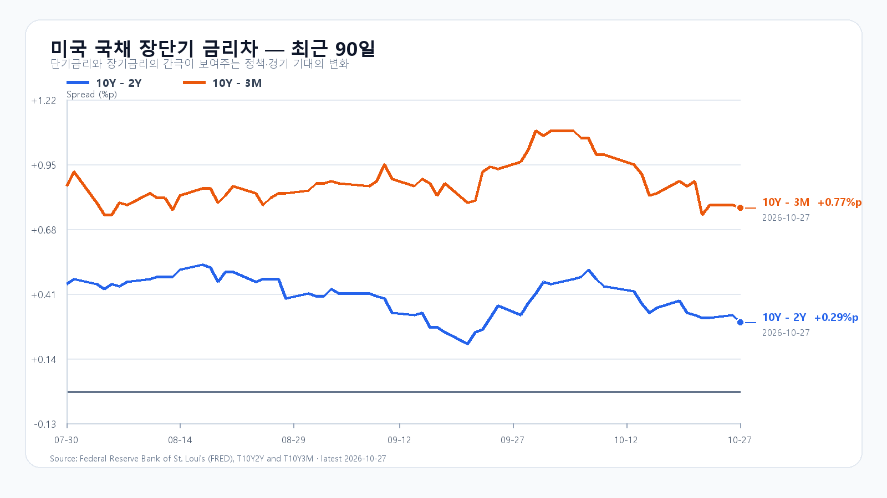
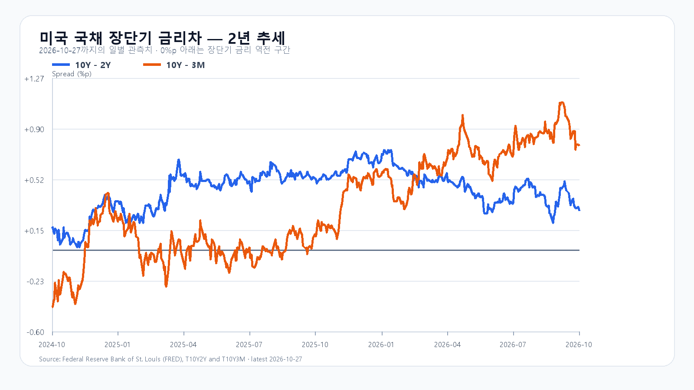

미국 반도체주가 하루 더 올랐습니다. 그러나 전일 3.09% 급등한 KOSPI에는 이미 AI 투자와 메모리 기업의 주주환원 기대가 들어와 있습니다. 오늘은 SK하이닉스의 실적 발표가 그 기대를 뒷받침하는지, 5,700선 부근에서 매수가 이어지는지를 시험합니다.
오늘 아침 실적이 반등의 다음 조건을 정한다
SK하이닉스는 오늘 오전 9시 전에 3분기 실적을 발표하고 9시에 설명회를 열 예정입니다. 매출과 영업이익뿐 아니라 HBM 출하, 고객 주문, 설비 투자와 현금흐름이 함께 중요합니다. 주주환원 확대를 기대하며 오른 가격은 실제 발표의 규모와 집행 조건에 다시 반응할 수 있습니다. SK하이닉스 공식 일정
화요일 KOSPI는 5,658.65에 출발해 5,737.61까지 올랐지만 5,638.34로 마쳤습니다. KODEX 레버리지는 72,745원에서 밀려 69,955원으로 끝났습니다. 종가는 올랐어도 장중 고점에서 매물이 나온 만큼, 실적 발표 뒤 첫 상승보다 오전 10시 이후 매수의 지속성이 더 중요합니다.
미국 반도체는 추가 상승, 국내 반영분은 따로 본다
미국 27일 정규장에서 SOXX는 3.91%, SMH는 3.02% 올랐습니다. AMD가 5.45%, Broadcom이 4.00% 상승했고 Micron은 2.77%, Nvidia는 0.90% 올랐습니다. QQQ는 1.27%, TQQQ는 3.81% 상승했습니다. 주요 종목은 함께 올랐지만 상승 폭에는 차이가 있었습니다. 미국 시세
AI 기업의 자금 조달과 IPO 기대는 이미 전일 한국장 반등에도 작용했습니다. 미국의 뒤이은 상승을 같은 크기의 새 호재로 더하기보다, 오늘 삼성전자와 SK하이닉스가 실적 발표 후에도 상승분을 지키는지 봐야 합니다.
Meta 공모는 커졌지만 현금 유입에는 시차가 있다
Meta는 보통주 공모를 225억달러에서 250억달러로 늘리고 주당 가격을 625달러로 정했습니다. 125억달러 규모 전환우선주 관련 공모를 합하면 375억달러입니다. 여기에 향후 600억달러 시장가 매각 계획까지 더한 총액을 곧바로 확보한 현금으로 읽어서는 안 됩니다. 보통주 선도매매의 정산은 내년 11월까지 이어질 수 있습니다. 투자금 마련은 AI 설비 수요를 지지하지만 희석과 자금 회수 부담도 남깁니다. Meta 공모 가격 발표
메모리 현물 보합과 높은 금리
27일 대만시간 오후 6시 10분 기준 DDR5 16Gb 현물 평균은 61.333달러, DDR4 16Gb는 82.623달러로 모두 보합이었습니다. DDR5 RDIMM 32GB는 2,165달러로 0.92% 내렸습니다. 품목별 현물 흐름과 HBM 장기 계약의 수익성을 구분해 볼 시점입니다. TrendForce
미 재무부의 27일 금리는 3개월물 4.22%, 2년물 4.70%, 10년물 4.99%입니다. 전일보다 2년물은 2bp 올랐고 10년물은 1bp 내렸습니다. 장기금리가 여전히 5%에 가까워 대규모 AI 투자의 자금 비용 부담은 이어집니다. 미 재무부
5,700선 회복에 수급이 붙는가
기본 종가 범위는 5,600~5,800(50%)으로 봅니다. 지수가 이 범위에 있고 외국인 순매도가 8천억원을 넘지 않는 조건입니다. 5,800선을 넘으며 외국인·프로그램 매수가 동행하는 강세 범위는 5,800 초과~5,950(25%), 5,600선 아래에서 외국인·프로그램 매도가 겹치는 약세 범위는 5,400~5,600 미만(25%)입니다. 5,800선 재이탈은 강세 판단을, 5,600선 회복은 약세 판단을 무효로 만듭니다. 실적 내용에 따라 예상 범위 밖의 변동도 가능합니다.
KODEX 레버리지는 전일 저점 69,465원을 첫 지지, 종가 69,955원을 반등 기준, 고점 72,745원을 저항으로 봅니다. 69,465원을 밑돈 뒤 회복하지 못하면 전일 반등의 지속을 전제로 한 판단을 접습니다.
한국시간 내일 오전 3시에는 FOMC 결정이 나옵니다. Microsoft는 미국시간 28일, Amazon은 29일 실적을 발표하고, 내일 오후 9시 30분에는 미국 GDP 속보치와 PCE 물가를 포함한 개인소득·소비가 함께 나옵니다. 오늘 국내 실적을 통과하더라도 금리와 빅테크 투자 계획을 확인할 일정이 이어집니다. 연준 · BEA
장전 시세
| 항목 | 최근값 | 원천 시각 |
| 삼성전자 NXT (OPEN) | 229,000원 · 3.15% | 2026-10-28T08:33:51.637236+09:00 |
| SK하이닉스 NXT (OPEN) | 1,377,000원 · 2.68% | 2026-10-28T08:33:51.637245+09:00 |
| 하나은행 USD/KRW 고시 | 1,327.00원 | 2026-10-28T08:24:14+09:00 |
| NQF 최근 거래 | 29,814.00 | 2026-10-28T08:23:47+09:00 |
| ESF 최근 거래 | 7,758.75 | 2026-10-28T08:23:47+09:00 |
| CLF 최근 거래 | 99.92 | 2026-10-28T08:22:20+09:00 |
| BZF 최근 거래 | 109.49 | 2026-10-28T08:20:26+09:00 |
미국 시간외 최근 거래
| 종목 | USD | 종가 대비 | 원천 시각 |
| NVDA | 217.63 | -0.14% | 2026-10-28T08:03:18+09:00 |
| AMD | 561.71 | +0.26% | 2026-10-28T08:03:07+09:00 |
| MU | 927.00 | -0.19% | 2026-10-28T08:01:39+09:00 |
| AVGO | 341.56 | -0.23% | 2026-10-28T08:02:12+09:00 |
미국 정규장
| 종목 | 종가 USD | 등락 |
| QQQ | 721.25 | +1.27% |
| TQQQ | 71.04 | +3.81% |
| SOXX | 511.06 | +3.91% |
| SMH | 557.98 | +3.02% |
| NVDA | 217.94 | +0.90% |
| AMD | 560.26 | +5.45% |
| MU | 928.76 | +2.77% |
| AVGO | 342.33 | +4.00% |


SK하이닉스 실적 일정 · Meta 공모 가격 확정 · DRAM 현물 · 미 재무부 · 미국 시세 · 국내 일봉 · FOMC · BEA 일정 · Microsoft IR · Amazon 실적 일정